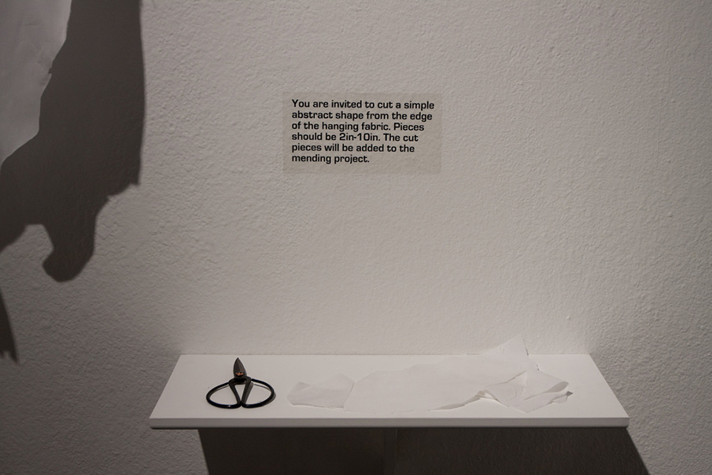
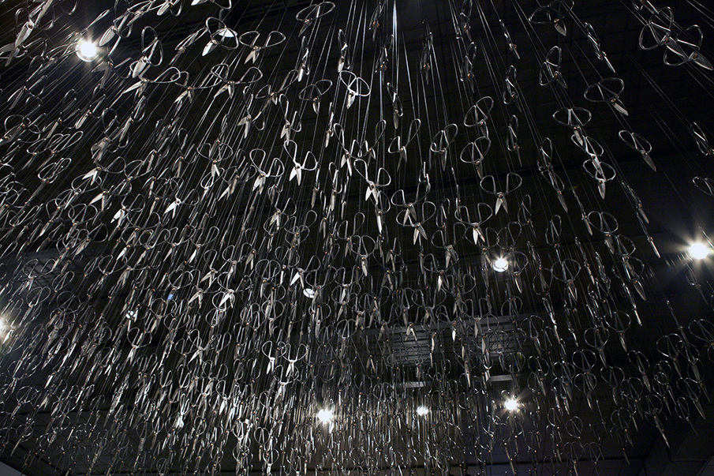
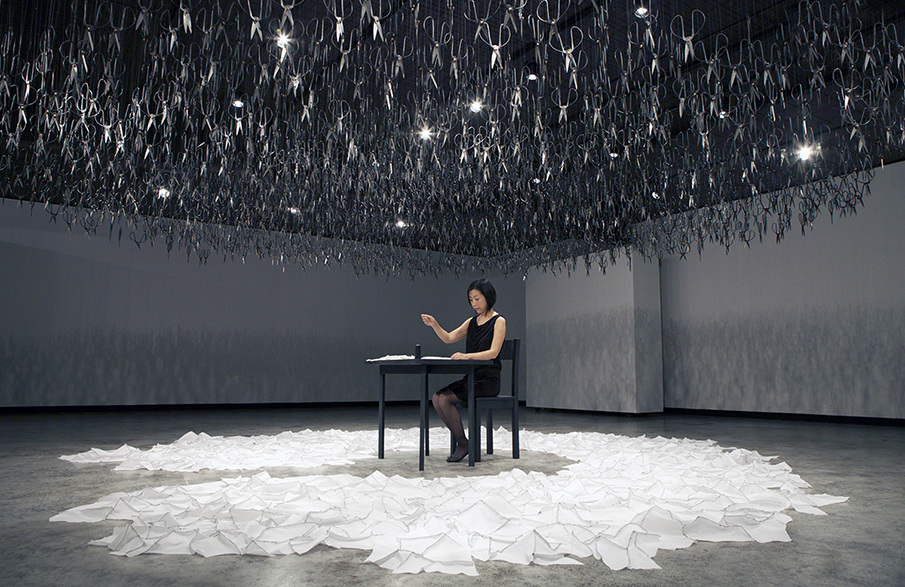

Beili Liu - The Mending Project (2011); Iron scissors, fabric, thread, needle, table, chair, dimensions variable
The Mending Project consists of 1500 pairs of Chinese iron scissors suspended from the ceiling,
pointing downwards, forming a menacing dark cloud
A woman sits beneath the countless sharp blades of the scissors and performs an ongoing simple task of mending
Viewers are invited to cut off small pieces of white cloth hung near the entrance of
the gallery space and pass them onto the performer




The sewn fabric, filled with ridges and valleys of black stitches, lays bare on the floor
beneath the cloud of scissors and grows in size throughout the performance;
The Mending Project alludes to looming aggression and uncertainty,
which are balanced and softened by the silent, simple action of mending